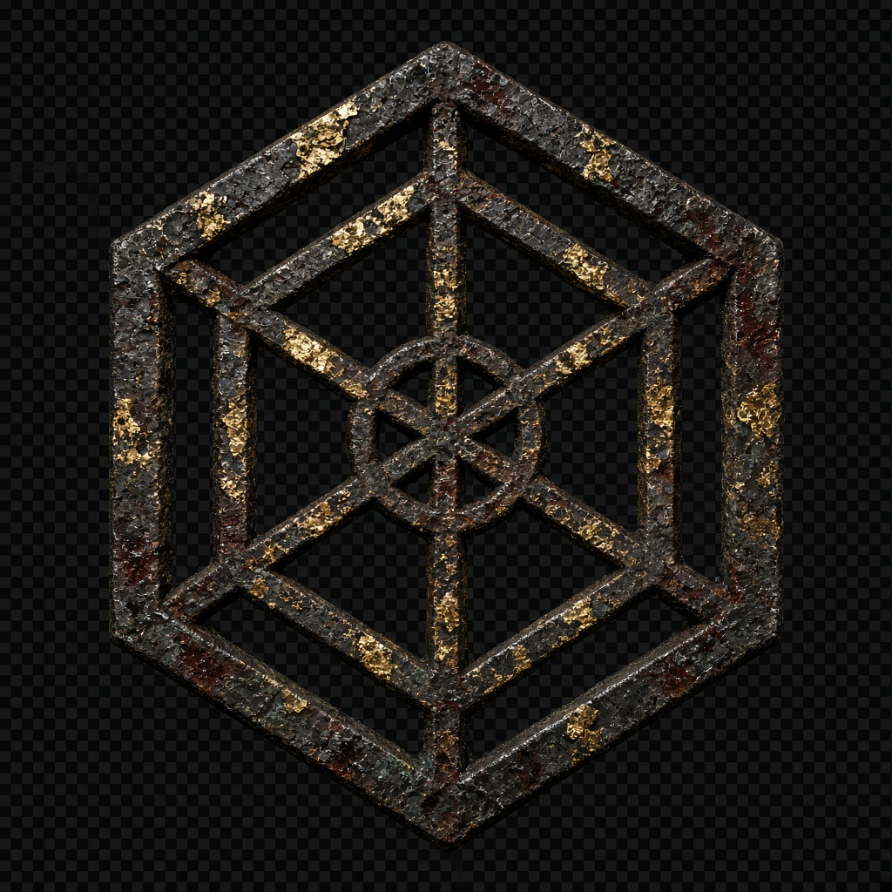

The chapel is the look
Wet stone, torch, iron, a knight in the dark. That grit is the game. Hack and slash. Fast. A shit-show. Crystal is in the hand. Magma and dark stone are still finding their weight. The blade needs flesh.

First-person · blade and left hand
The sword stays a sword. Magic changes what the next cut does.
Grit. Steel. A shit-show that does not wait.
I
Hack and slash. Fast. Messy. Contact, or it did not happen. The chapel is a meat house — frost them, cut them, throw the next body on the fire.
No waiting. Short buffer. The swing is already in the air. The left hand writes while the right hand kills.
The edge has to land. No look-assist. No phantom hits. Blood only where steel finds bone.
Poise breaks. Limbs come off. A frozen body shatters. Fire keeps eating after the cut leaves.
Frost, then freeze, then the sword. Lightning jumps. A thrown corpse is still a weapon. Keep moving.
II
Three workings. Held, thrown, or slammed. Each one writes on the steel.
A channel, held. Frost climbs the blade. When they freeze, the cut shatters them.
in the handA thrown ember. When it lands, fire sits on the steel. The next cut keeps eating.
finding its weightWeight, not mist. A slam that should feel like the ground answering.
still being wroughtIII
Contact, or it did not happen. Poise first. Then the body opens.
IV
Spells do not replace the sword. They change the cut that follows.
Frost, then freeze, then the sword. They come apart.
Fire on the blade, then a cut. It keeps burning after the steel leaves.
Lightning on the blade, then a cut. It jumps once to the next body.
Stone to crack the guard. Force to throw the body. Executions short. Corruption climbing the left hand: veins, cracked skin, runes.
V
They wait in the arch. They do not wait long.
Rusted plate in the doorway. Hollow sockets. When the torch catches him, he is already walking.
Skeleton steel. Poise first. A break opens a window. A frozen one comes apart on the cut.
The hour changes as it empties. Bodies shove bodies. A thrown corpse that hits another is still a hit.
Stagger, poise break, or a bad wound. The finish is short. Sword through. Frozen shatter. Then the next one.
VI
Wet stone, torch, iron, a knight in the dark. That grit is the game. Hack and slash. Fast. A shit-show. Crystal is in the hand. Magma and dark stone are still finding their weight. The blade needs flesh.
Hexwrought stands. Casts no longer fire when the yard begins. The left hand writes on the steel. The right hand does not wait.